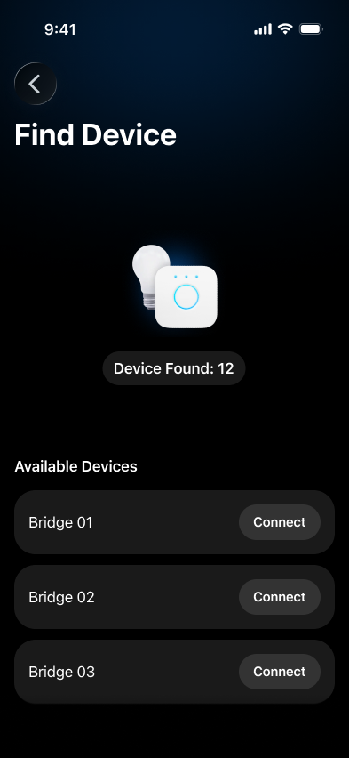
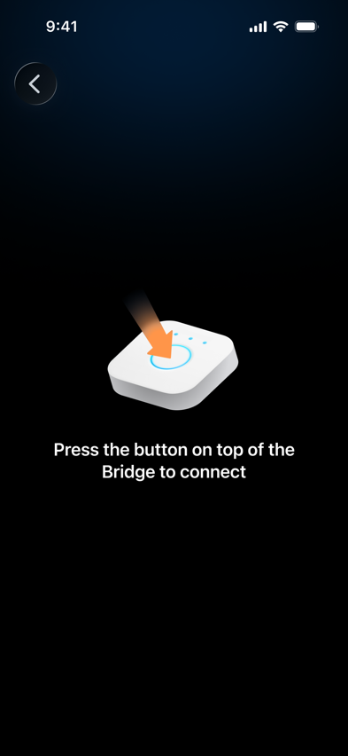
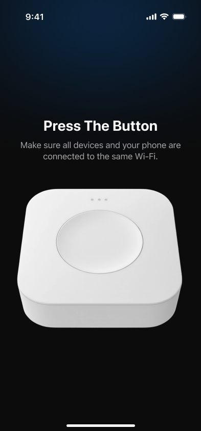
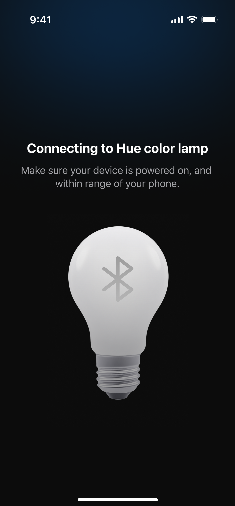

01 · The problem
The selection step was costing connections
Connecting a light was a critical first step in SmartHue, yet the successful-connection rate was low for Bridge and Hue BLE Light. GA4 showed substantial drop-off after devices were found, at the point where users had to work through a device list and tap Connect themselves.
In the previous Bridge flow, tapping Connect did not complete the interaction: users then had to press the physical button on the Bridge.
The journey was also difficult when no light was found, and the additional selection step made connection take longer than necessary.
02 · From data to a product decision
Removing an unnecessary decision
I reviewed the connection funnel in GA4 and proposed removing the manual-selection step after discovery. Users still start a scan with Scan Now, but once SmartHue finds a supported device, the system moves directly into connection.
03 · Before and after
From a device list to direct connection
The redesigned journey removed the device list after discovery. For Bridge, the user moves directly to the physical action required to complete connection.



Manual Connect step removed · Physical Bridge action retained
04 · Clear feedback
Automation without losing visibility
For Hue BLE Light, the interface shows the model currently being connected, such as Hue color lamp. When more than one light is found, SmartHue connects lights one at a time in detection order, avoiding repeated manual selection while keeping progress visible.

05 · Outcome
A more successful, faster connection journey
The redesigned flow removed the manual device-selection step. Team outcomes showed increased successful connections and reduced connection time, helping users reach their first connected light with less effort.
06 · What I’d improve next
Continue the journey through every detected device
- Keep the user in the connection journey until every detected device has completed connection, then take them to light controls.
- Add a factory-reset recovery state for incompatible Hue lights, directing users to the official Philips Hue app when a reset is required.